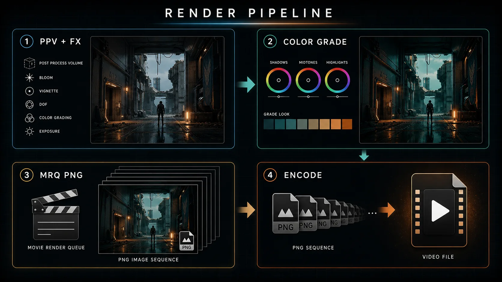
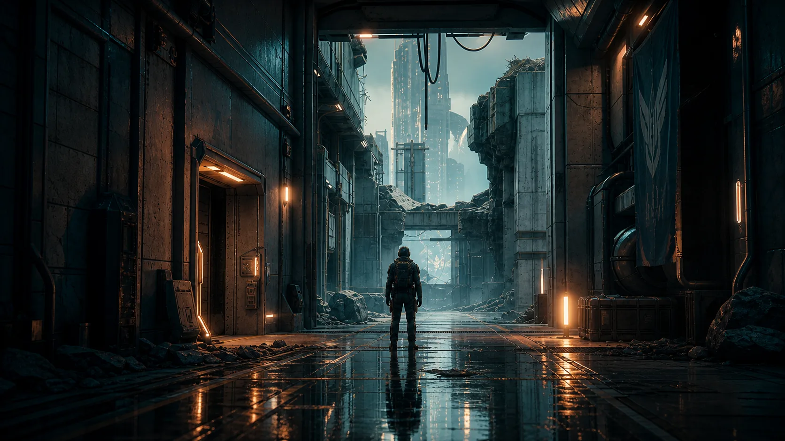

13주차 3교시 — 실습: 시네마틱 렌더링 워크플로우 (학생용)
관련 문서
| 관계 | 문서 |
|---|---|
| 강의 계획서 | 강의계획서: Game Engine II |
| 강의 아웃라인 | 13주차 아웃라인: 렌더링 및 컬러 그레이딩 |
| 1교시 자료 | 13주차 1교시: Post Process Volume + 분위기 이펙트 |
| 2교시 자료 | 13주차 2교시: 컬러 그레이딩 + LUT + Movie Render Queue |
| 선행 12주차 3교시 | 12주차 3교시: 기말 컨셉 환경 블록아웃 |
- 본인 시네마틱 시퀀스에 Post Process Volume과 분위기 이펙트를 적용할 수 있다
- 컬러 그레이딩과 선택 LUT로 시네마틱 색 톤을 잡을 수 있다
- Movie Render Queue 기본 출력 설정으로 PNG 이미지 시퀀스를 출력하고 영상 인코딩 흐름을 설명할 수 있다
- 이 렌더링 워크플로우로 14~16주차 기말 렌더링을 리허설할 수 있다
3교시는 1교시(Post Process Volume + 분위기 이펙트)와 2교시(컬러 그레이딩·LUT·Movie Render Queue)에서 배운 것을 본인 시네마틱 시퀀스에 적용하고, 영상 출력 흐름까지 확인하는 실습입니다.
13주차에는 별도 제출 과제가 없습니다. 3교시 산출물은 제출·채점 대상이 아니며, 14~16주차 기말 프로젝트에서 같은 렌더링 절차를 쓰므로 오늘은 그 렌더링 워크플로우를 한 번 통과해보는 리허설입니다. 오늘 손에 익혀두면 기말 영상 출력이 수월해집니다.
시작 — 시퀀스 확인 + 미션 + 환경 셋업
3교시 미션

본인 시네마틱 시퀀스에 ① Post Process Volume + 분위기 이펙트와 ② 컬러 그레이딩(+선택 LUT)을 적용하고, ③ Movie Render Queue 기본 출력 설정으로 PNG 이미지 시퀀스를 출력한 뒤 ④ 영상으로 인코딩한다.
오늘 모든 항목을 완성할 필요는 없습니다. 기본 완성은 PPV+이펙트 적용 + 컬러 그레이딩 + MRQ 테스트 렌더로 이미지 시퀀스 출력까지입니다. LUT 적용, 영상 인코딩, 전체 구간 렌더는 시간이 남을 때의 선택 확장입니다.
렌더 대상 시퀀스 확인
가장 먼저 오늘 렌더할 본인 시퀀스를 정합니다. 13주차는 새 캐릭터·카메라를 만드는 시간이 아니라, 이미 가진 시퀀스에 렌더링 워크플로우를 적용하는 시간입니다.
- 1. Content Browser 에서 본인 Level Sequence 를 찾아 시퀀서로 연다
- 2. 카메라 · Camera Cut · 애니메이션 트랙이 들어 있어, 재생하면 시네마틱 시퀀스가 이어지는지 확인한다
- 3. 렌더 대상으로 이 시퀀스를 쓴다
렌더 대상은 본인 상황에 맞게 고르면 됩니다. 11주차에 만든 격투 시네마틱 LS_RetargetDemo 를 써도 되고, 본인 기말 컨셉의 다른 시퀀스를 써도 됩니다. 완성된 시퀀스가 아직 없다면 11주차 격투 시네마틱 LS_RetargetDemo 를 렌더 연습 대상으로 씁니다. 오늘 핵심은 '어떤 시퀀스를 렌더하느냐'가 아니라 '렌더링 워크플로우를 한 번 통과해보느냐'입니다.
환경 셋업 — MRQ 플러그인 + 출력 폴더
실습을 시작하기 전에 두 가지를 확인합니다. 단계 3 에서 막히지 않으려면 지금 해두는 것이 좋습니다.
- 1. Movie Render Queue 플러그인 활성 확인 — Edit > Plugins 에서 Movie Render Queue 검색. 비활성이면 활성화하고 에디터 재시작
- 2. 출력 폴더 미리 정해두기 — 렌더 결과 PNG 이미지 시퀀스가 저장될 폴더를 하나 만들어 둔다 (예: 프로젝트 폴더 안
Render/) - 3. (선택) 12주차에 만든 환경이 있으면, 본인 시퀀스를 그 환경 안에 배치해두면 렌더 결과가 더 풍부해진다
MRQ 플러그인이 비활성이면 단계 3 에서 MRQ 창 자체가 열리지 않습니다. 출력 폴더도 미리 만들어두면 렌더할 때 시간을 줄일 수 있습니다.
단계 1 — Post Process Volume + 분위기 이펙트
단계 1 은 1교시에 배운 Post Process Volume + 분위기 이펙트를 본인 시퀀스의 씬에 적용하는 단계입니다. 1교시 데모에서 본 순서 — PPV 배치 → 노출 고정 → 이펙트 — 를 본인 씬에 적용합니다.
단계 1 흐름 (1교시 복습)
- 1. Place Actors > Volumes > Post Process Volume 을 씬에 배치
- 2. PPV 선택 → 디테일 패널에서 Infinite Extent (Unbound) 켜기 → 레벨 전체 적용
- 3. Exposure 를 Manual 로 고정 → 카메라가 움직여도 밝기가 출렁이지 않게
- 4. Bloom / Vignette / Depth of Field 중 2개 이상 적용 — 본인 시네마틱 분위기에 맞게
Depth of Field 를 쓴다면 PPV 에서 DoF 를 켜고, 실제 초점은 9주차에 배운 Cine Camera 의 Focus Distance·Aperture 로 잡습니다. 1교시 절제 원칙대로, 효과는 강도를 작게 시작해 전/후를 비교하면서 조정합니다.
이 단계에서 할 일
- 1. Post Process Volume 배치 + Infinite Extent 켜기
- 2. Exposure 를 Manual 로 고정
- 3. Bloom / Vignette / Depth of Field 중 2개 이상 적용
- 4. 시퀀서를 재생하거나 카메라 시점에서 보며, 효과가 의도대로인지 전/후 비교
기대 결과: 본인 시퀀스의 씬에 PPV 가 적용돼, 노출이 안정되고 분위기 이펙트 2개 이상이 입혀진 상태.
범위를 작게 잡아도 됩니다. 이펙트 2개만 의도를 갖고 적용해도 충분합니다. '이 장면은 따뜻한 회상이라 Bloom 으로 빛을 풀고, Vignette 로 시선을 중앙으로 유도한다' — 이렇게 왜 켜는지 한 문장으로 설명되면 잘 적용한 것입니다.
흔한 문제 — 단계 1
| 증상 | 원인 | 해결 |
|---|---|---|
| 효과가 일부 구간에서만 보임 | Infinite Extent 미체크 | PPV 선택 → Infinite Extent (Unbound) 켜기 |
| 카메라가 움직일 때 밝기가 출렁임 | Exposure 가 Auto 상태 | Exposure 를 Manual 로 고정 |
| 화면이 뿌옇게 떠 보임 | Bloom Intensity 과다 / Threshold 낮음 | Bloom 값을 줄이고 전/후 비교 |
| DoF 를 켰는데 배경이 안 흐려짐 | 카메라 초점 미설정 | Cine Camera 의 Focus Distance·Aperture 조정 (9주차) |
단계 2 — 컬러 그레이딩 (+선택 LUT)
단계 2 는 2교시에 배운 컬러 그레이딩입니다. 같은 PPV 안의 Color Grading 섹션에서 본인 시네마틱의 색 톤을 결정합니다.
단계 2 흐름 (2교시 복습)
- 1. PPV 디테일 패널의 Color Grading 섹션을 연다
- 2. White Balance 의 Temperature 로 큰 방향을 정한다 — 따뜻하게(노을·회상) ↔ 차갑게(SF·새벽)
- 3. Global 의 Saturation·Contrast 로 색의 선명함과 대비를 조정한다
- 4. (시간이 되면) Shadows / Highlights 를 분리 조정 — 그림자는 차갑게, 하이라이트는 따뜻하게
- 5. (선택) LUT 슬롯에 강사 제공 LUT 텍스처를 적용하고 LUT Intensity 로 강도 조절
2교시 순서 그대로입니다 — 색온도로 큰 방향을 먼저 잡고, 그다음 Saturation·Contrast 로 다듬습니다. LUT 는 선택입니다. 강사가 검증한 LUT 텍스처를 쓰며, Intensity 는 0.5 정도에서 시작합니다. 인터넷 .cube 파일은 형식이 달라 바로 적용되지 않는 경우가 많으므로 강사 제공 LUT 를 사용합니다.
이 단계에서 할 일
- 1. PPV 의 Color Grading > White Balance > Temperature 로 따뜻함/차가움 방향 결정
- 2. Global 의 Saturation·Contrast 로 색감·대비 조정
- 3. (시간 되면) Shadows/Highlights 분리 그레이딩
- 4. (선택) 강사 제공 LUT 적용 + Intensity 조절
- 5. 시퀀서를 재생하며 톤이 본인 시네마틱 의도와 맞는지 확인
기대 결과: 본인 시퀀스에 시네마틱 색 톤이 입혀진 상태 — 적용 전과 비교했을 때 '느낌'이 분명히 달라진 화면.
컬러 그레이딩은 미세하게 조정하는 편이 좋습니다. 색을 과하게 틀면 화면의 균형이 쉽게 무너집니다. 전/후를 비교하면서 '확실히 나아졌다' 싶은 지점에서 멈춥니다. 톤이 안 잡히면 Temperature 하나만 움직여 봅니다 — 그것만으로도 씬 분위기가 크게 바뀝니다.
흔한 문제 — 단계 2
| 증상 | 원인 | 해결 |
|---|---|---|
| 색이 너무 과해 화면의 균형이 무너져 보임 | 슬라이더를 과하게 조정 | 값을 줄이고 전/후 비교 — 컬러 그레이딩은 미세하게 |
| Color Grading 섹션이 보이지 않음 | PPV 디테일 패널 섹션 위치 | PPV 선택 후 디테일 패널에서 Color Grading 검색 |
| 인터넷에서 받은 LUT 가 적용되지 않음 | .cube 는 UE 전용 텍스처 형식이 아님 | 강사 제공 LUT 텍스처 사용 |
| LUT 가 너무 강하게 적용됨 | LUT Intensity 가 1 에 가까움 | LUT Intensity 를 0.5 안팎으로 낮춤 |
단계 3 — Movie Render Queue 설정 + 테스트 렌더
단계 3 은 오늘의 핵심입니다. 2교시에 배운 Movie Render Queue 로, PPV·컬러 그레이딩을 입힌 본인 시퀀스를 PNG 이미지 시퀀스로 출력합니다.
단계 3 흐름 (2교시 복습)
- 1. Movie Render Queue 창을 연다 — Window > Cinematics > Movie Render Queue, 또는 시퀀서의 렌더(클래퍼보드) 아이콘
- 2. + Render 로 본인 Level Sequence 를 큐에 추가
- 3. Settings 에서 기본 출력 설정 확인 — Deferred Rendering / Anti-Aliasing(샘플) / 기본값
- 4. Output 에서 해상도(1920×1080)와 출력 폴더를 지정하고, 필요하면
+ Setting에서 .png Sequence [8bit] 를 추가 - 5. 테스트 렌더 — 짧은 구간 또는 낮은 샘플로 먼저 1회 렌더
2교시 첫 힌트대로, 처음부터 전체 구간을 렌더하지 않습니다. MRQ 는 느려서, 샘플이 높으면 프레임당 몇 초씩 걸릴 수 있습니다. 그래서 테스트 렌더부터 합니다.
테스트 렌더 방법 (둘 중 하나)
- 짧은 구간만 — 시퀀스의 일부 구간만 렌더되도록 프레임 범위를 짧게 잡는다
- 낮은 샘플로 — Anti-Aliasing 의 샘플 수를 낮춰 전체를 빠르게 렌더한다
이 단계에서 할 일
- 1. MRQ 창 열고 본인 Level Sequence 를 큐에 추가
- 2. Settings — 기본 출력 설정 확인 (Deferred / Anti-Aliasing). 잘 모르면 기본값으로 둔다
- 3. Output + .png Sequence [8bit] — 해상도 1920×1080, PNG 이미지 시퀀스 포맷, 출력 폴더를 확인한다
- 4. 테스트 렌더 실행 — 짧은 구간 또는 낮은 샘플로 1회
- 5. 출력 폴더를 열어 PNG 이미지가 프레임 순서대로 생성됐는지 확인 (0001.png, 0002.png …)
기대 결과: 출력 폴더에 본인 시퀀스의 PNG 이미지 시퀀스가 (짧은 구간이라도) 생성된 상태.
렌더가 도는 동안 화면이 멈춘 것처럼 보여도 정상입니다. MRQ 는 한 프레임씩 여러 설정을 반영해 계산하느라 시간이 걸립니다. 렌더가 너무 오래 걸리면 취소한 뒤 샘플 수를 더 낮추거나 구간을 더 짧게 잡아 다시 렌더합니다. 3교시 안에서는 테스트 렌더로 파이프라인을 한 번 통과하는 것이 목표이고, 전체 구간 렌더는 수업 후 자율로 돌립니다.
흔한 문제 — 단계 3
| 증상 | 원인 | 해결 |
|---|---|---|
| MRQ 창이 메뉴에 없음 | 플러그인 비활성 | Edit > Plugins 에서 Movie Render Queue 활성 + 에디터 재시작 |
| 렌더가 예상보다 오래 걸림 | 샘플 수·구간이 큼 | 취소한 뒤 샘플을 낮추거나 구간을 짧게 → 다시 렌더 |
| 출력 폴더에 파일이 없음 | Output 폴더 경로 미지정 | Output 설정에서 출력 폴더를 다시 지정하고 렌더 |
| 큐에 시퀀스가 안 올라감 | Level Sequence 가 아닌 것을 선택 | 카메라·컷이 든 Level Sequence 를 큐에 추가 |
| 출력 화면이 viewport 와 약간 다름 | viewport 는 실시간 미리보기 | MRQ 출력이 최종 기준 — 정상 |
단계 4 — 인코딩: 이미지 시퀀스 → 영상
단계 4 는 단계 3 에서 나온 PNG 이미지 시퀀스를 하나의 영상 파일로 만드는 작업으로, 이것을 인코딩이라고 합니다.
2교시에서 미뤄둔 질문 — '왜 영상 파일이 아니라 PNG 낱장으로 출력하는가' — 의 답이 여기 있습니다. 이미지 시퀀스는 학생 PC 와 편집 도구에서 안정적으로 열리고, 렌더가 중간에 멈춰도 나온 프레임까지는 그대로 남습니다. 영상 파일로 바로 뽑으면 코덱 문제로 열리지 않거나, 렌더가 끊겼을 때 전체 파일이 손상될 수 있습니다. 그래서 'PNG 시퀀스로 출력 → 영상으로 인코딩' 두 단계로 나눕니다.
인코딩 도구는 DaVinci Resolve 무료판을 권장합니다. 무료로 쓸 수 있고, 수업 이후 영상 편집·색보정에도 계속 활용하기 좋은 도구입니다.
DaVinci Resolve 무료판으로 인코딩하는 흐름
- 1. DaVinci Resolve 에서 새 프로젝트를 만들고, PNG 이미지 시퀀스가 든 폴더를 미디어로 불러온다 — 연속 번호 파일은 자동으로 하나의 시퀀스로 인식된다
- 2. 그 이미지 시퀀스를 타임라인에 올린다
- 3. Deliver(출력) 페이지에서 영상 포맷(MP4 / H.264 등)을 고르고 Render(렌더) 한다
DaVinci Resolve 의 미디어 임포트·Deliver 페이지 UI 는 버전에 따라 다를 수 있으므로 설치된 버전 기준으로 진행합니다. 명령줄에 익숙하다면 ffmpeg 도 대안이 됩니다. 출력 영상의 프레임레이트(예: 24fps)는 본인 시퀀스 설정과 맞춥니다.
이 단계에서 할 일 (테스트 렌더 출력물이 있는 경우)
- 1. DaVinci Resolve 무료판에 단계 3 의 PNG 이미지 시퀀스를 미디어로 불러오기
- 2. 타임라인에 올리고, Deliver 페이지에서 영상 파일로 출력
- 3. 출력된 영상 파일이 재생되는지 확인
기대 결과: 본인 PNG 이미지 시퀀스가 하나의 영상 파일로 인코딩된 상태.
인코딩은 자기점검의 확장 기준입니다. 단계 3 까지가 기본 완성이며, 아직 테스트 렌더가 끝나지 않았다면 단계 3 을 계속 진행합니다. 전체 구간 렌더와 인코딩은 수업 후 자율로 해도 됩니다.
자기점검
본인 작업을 점검합니다. 채점용이 아니라 본인 확인용입니다 — 기말 렌더링에 들어가기 전 '내 렌더링 워크플로우가 어디까지 완료됐는지' 스스로 보는 것입니다.
기본 완성 기준
- 미완료: Post Process Volume 을 배치(Infinite Extent)하고 Exposure 를 Manual 로 고정했다
- 미완료: Bloom / Vignette / Depth of Field 중 2개 이상으로 분위기를 입혔다
- 미완료: 컬러 그레이딩(White Balance·컬러휠)으로 시네마틱 톤을 잡았다
- 미완료: MRQ 에 시퀀스를 추가하고 기본 출력 설정 + 출력 해상도 + PNG 이미지 시퀀스 포맷을 구성했다
- 미완료: 짧은 구간이라도 테스트 렌더로 이미지 시퀀스를 출력했다
확장 기준
- 미완료: LUT 를 적용해봤다
- 미완료: 이미지 시퀀스를 영상으로 인코딩했다
- 미완료: 전체 구간 렌더를 완료했다
기본 5개가 모두 체크되면 오늘 목표는 충분히 달성한 것입니다. 확장 3개는 보너스 학습입니다. 막힌 항목이 있으면 그 단계의 흔한 문제 표를 다시 봅니다.
본인 시퀀스·환경·렌더 설정을 저장(Ctrl+S) 해두세요. 이 워크플로우가 14~16주차 기말 렌더링에 그대로 이어집니다.
마무리
PPV 와 컬러 그레이딩으로 영화의 톤을 입히고, Movie Render Queue 로 고품질 렌더 결과를 출력한다. 오늘 통과한 이 워크플로우가 기말 영상 출력에 그대로 쓰인다.

오늘 흐름 — PPV+이펙트 → 컬러 그레이딩 → MRQ 로 PNG 이미지 시퀀스 출력 → 인코딩. 이 4단계가 13주차 전체이자, 14~16주차 기말 렌더링 절차입니다.
13주차로 시네마틱 제작의 주요 기술을 한 번씩 다뤘습니다 — 캐릭터(10주차) · 카메라(11주차) · 환경(12주차) · 렌더링(13주차). 본인 기말 시네마틱에 필요한 기본 워크플로우가 갖춰진 상태입니다.
다음 시간 예고
14~15주차는 기말 프로젝트 제작과 피드백, 16주차는 시네마틱 영상 최종 제출입니다. 새 기능을 더 배우기보다, 지금까지 배운 내용을 통합해 본인 시네마틱 한 편을 완성하는 시간입니다. 오늘 익힌 Post Process · 컬러 그레이딩 · Movie Render Queue 워크플로우가 기말 영상 출력에 그대로 쓰입니다. 본인 시퀀스·환경·렌더 설정을 잘 저장해두면 14주차에 그대로 이어집니다.